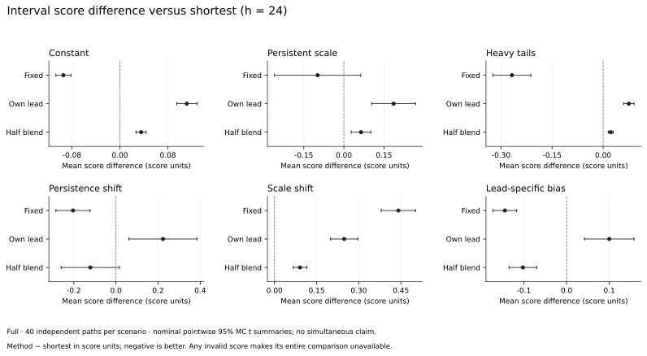
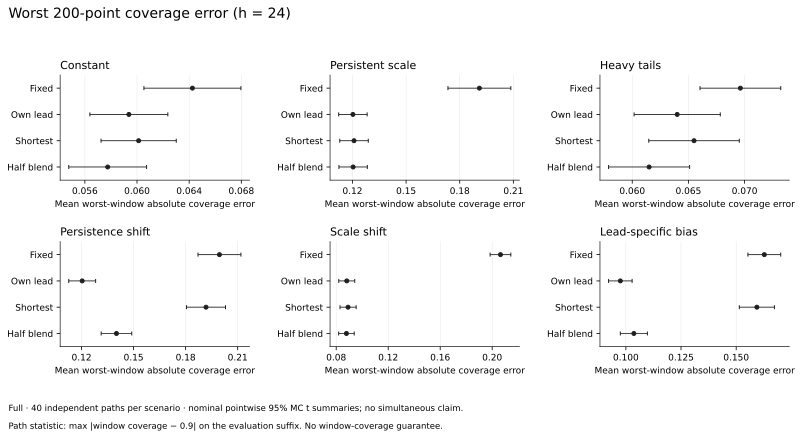
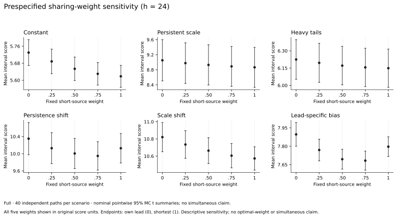

strategy-inference · v0.8.0 · Python ≥ 3.10
从时序评价，到在线不确定性
一个可安装的 Python 工具库：整理预测损失、做因果回测、比较预测器，并在标签成熟后更新单步或多步区间。统计假设、数值边界与复现记录随代码一起保留。
本页保存 v0.8.0 的完整研究与计时记录，源码绑定不可变提交。
开始使用
python -m pip install https://github.com/Studyer-Tang/strategy-inference/releases/download/v0.8.0/strategy_inference-0.8.0-py3-none-any.whlimport numpy as np
from strategy_inference import MultiStepConformal
tracker = MultiStepConformal(
[1, 6, 12, 24], scale=[1.0, 1.3, 1.3, 1.3],
step_size=0.1 / np.sqrt([1, 6, 12, 24]), decay=0.2,
scale_decay=0.97, scale_source="blended", scale_share_weight=0.5,
)
for t, value in enumerate(observations):
updates = tracker.observe(t, float(value))
intervals = tracker.predict([value] * 4) # naive 基线；只用当前标签示例尺度须在使用前由训练数据确定；上面只示范接口。允许跳过发行，观测时钟连续。每个区间保持发行时的阈值和尺度，未成熟标签留在 pending。
可用功能
- 预测评价与回测：损失矩阵、滚动窗口、预先固定的 naive / drift / seasonal 基线。
- 预测器比较：时间依赖下的路径损失差与重采样。
- 在线区间：单步、多步成熟反馈、pool / interlace 与固定尺度融合。
- 金融策略推断：HAC、筛选重放及有模型条件的参数不确定性检验。
v0.8.0 研究 · 固定尺度融合
v0.8 可按预先固定的权重，融合自身步长成熟残差 RMS 与最短步长共享 RMS。权重为 0、1 时，在两来源均可表示的范围内复现两个原模式；默认半权重不表示最优。融合保持每步长阈值独立，既不提前获得长步长标签，也不改变理想平均覆盖账本。
六个情形，每个 40 条独立路径；每条 3,000 个观测。滚动 AR(1) 点预测只用起点已有标签；训练前缀为 600，评价排除前 128 个发行起点。表中是本次模拟的 interval score 观测均值，越低越好。
| 情形 · h=24 | 固定尺度 | 自身 RMS | 最短共享 | 固定融合 · ½ |
|---|---|---|---|---|
| 常数尺度 | 5.524 | 5.730 | 5.618 | 5.654 |
| 持续随机尺度 | 8.767 | 9.052 | 8.866 | 8.930 |
| 重尾创新 | 5.881 | 6.225 | 6.149 | 6.172 |
| 持久性切换 | 9.924 | 10.351 | 10.128 | 10.006 |
| 尺度切换 | 11.014 | 10.821 | 10.573 | 10.664 |
| 步长特有偏差 | 7.652 | 7.897 | 7.797 | 7.695 |
h=24 时，固定尺度在六个情形中的 5 个评分均值最低。半权重融合保留两种尺度来源，在部分偏差情形的观测评分有所改善，但没有普遍领先。它是可选配置，不是新的默认方法。
本次记录没有空集或全域；这不能排除其尾事件。阈值不裁剪，若全域区间在模型下有正概率，无条件 raw interval score 的总体期望可能无穷。表格与 t 误差条是观测结果和名义 MC 汇总，不是总体风险或联合显著性的证书。
同时查看覆盖率与最差局部误差
每格为整体覆盖率 / 路径内最差 200 点窗口误差的跨路径均值（百分点）。历史前缀界不能直接用于这个去 warmup 的后缀或局部窗口。
| 情形 · h=24 | 固定尺度 | 自身 RMS | 最短共享 | 固定融合 · ½ |
|---|---|---|---|---|
| 常数尺度 | 90.02% / 6.43 pp | 90.03% / 5.94 pp | 90.03% / 6.01 pp | 90.04% / 5.78 pp |
| 持续随机尺度 | 89.94% / 19.10 pp | 89.85% / 12.02 pp | 89.86% / 12.09 pp | 89.85% / 12.04 pp |
| 重尾创新 | 90.09% / 6.96 pp | 90.10% / 6.40 pp | 90.12% / 6.55 pp | 90.11% / 6.15 pp |
| 持久性切换 | 90.78% / 19.95 pp | 90.18% / 12.04 pp | 90.78% / 19.17 pp | 90.50% / 14.01 pp |
| 尺度切换 | 90.31% / 20.64 pp | 90.06% / 8.81 pp | 90.04% / 8.91 pp | 90.06% / 8.79 pp |
| 步长特有偏差 | 90.24% / 16.27 pp | 90.04% / 9.75 pp | 90.26% / 15.94 pp | 90.14% / 10.36 pp |



六方法 × 四步长完整路径账本 · 冻结协议 · 实验源码快照 · 源码 SHA-256 · 运行环境 · 图表数据与哈希
source.zip 保存实验运行时的源码，是复核快照；不是 Python 安装包。证据绑定提交 7488a96。完整统计口径见结果说明，重放见v0.8.0 复现程序。
v0.8.0 本机工程计时
固定融合流式处理 50,000 × 4：0.754 秒，跟踪分配峰值 20.4 KiB；在同机同输入下，比最短共享增加 12.6% 耗时。独立保存两个 RMS 来源只增加 O(H) 状态；pending 取决于步长集合，批量结果另需 O(FH)。
| 任务 | 热调用 / ms | 分配峰值 / KiB |
|---|---|---|
| 批量 · 12,000 × 4 | 207.89 | 4866.91 |
| 自身 RMS 流式 · 50,000 × 4 | 672.82 | 19.08 |
| 最短共享流式 · 50,000 × 4 | 669.41 | 19.19 |
| 固定融合流式 · 50,000 × 4 | 753.59 | 20.38 |
| 固定融合流式 · 1,000 × 4 | 15.42 | 20.12 |
macOS-26.7.1-arm64-arm-64bit-Mach-O · Python 3.13.15 · NumPy 2.5.3。串行进程，BLAS 线程环境设为 1，一次预热后五次热调用中位数。导入、输入生成、一致性检查和调用后指纹不计时；API 内部输出构造计时。tracemalloc 单独一次，排除已有输入，包含新增分配，不是 RSS。
工程负载统一学习率 0.1；统计实验采用 0.1/√h。这些 v0.8.0 source-bound 本机测量不构成当前版本性能、通用性能或统计保证。